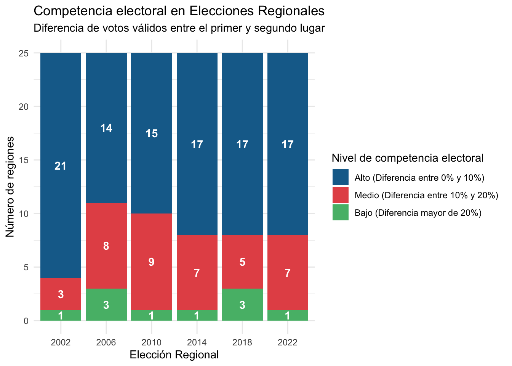
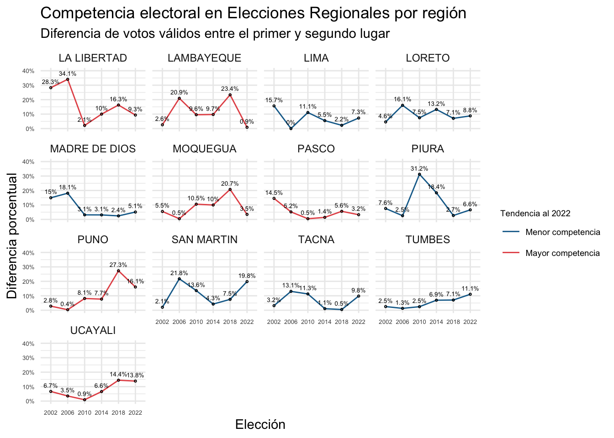
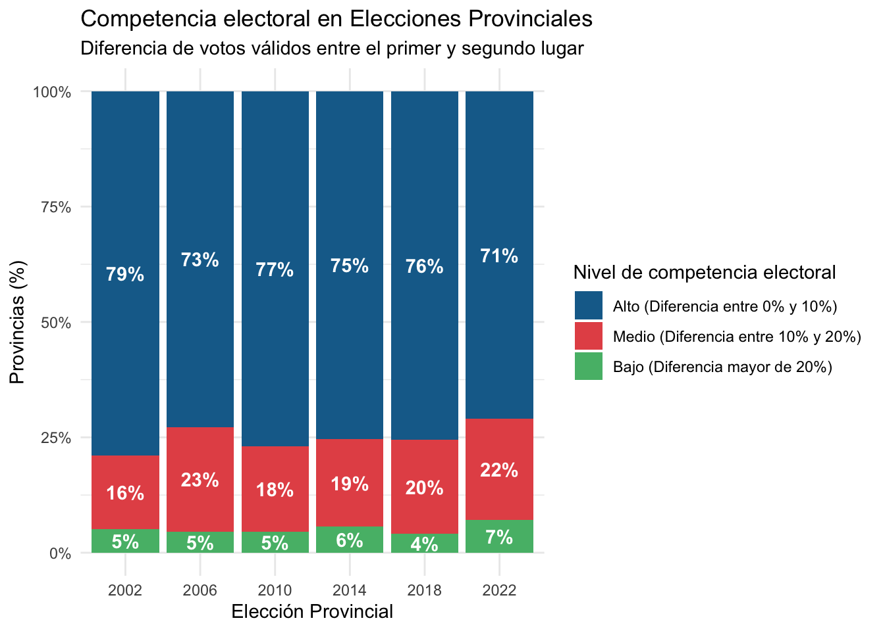
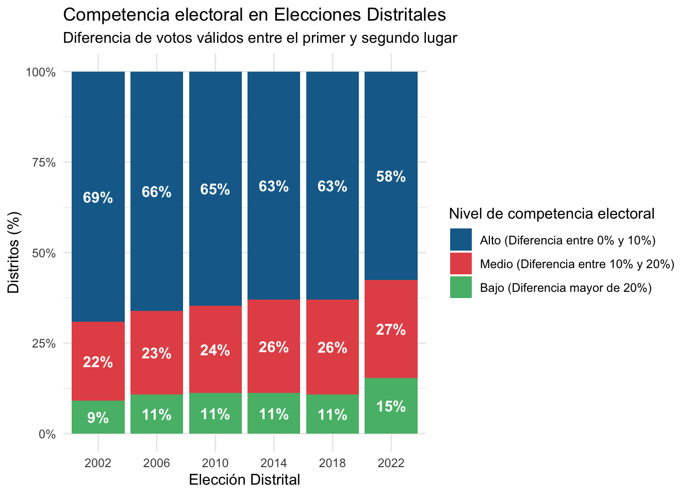

6 Competencia Electoral:
Competencia Electoral
La competencia electoral ha incrementado.
6.1 Elecciones Regionales

##
## 1_ALTO 2_MEDIA 3_BAJA
## 2002 21 3 1
## 2006 14 8 3
## 2010 15 9 1
## 2014 17 7 1
## 2018 17 5 3
## 2022 17 7 1| Elección | Competencia Alta | Competencia Media | Competencia Baja | Total |
|---|---|---|---|---|
| Regional 2002 | 21 | 3 | 1 | 25 |
| Regional 2006 | 14 | 8 | 3 | 25 |
| Regional 2010 | 15 | 9 | 1 | 25 |
| Regional 2014 | 17 | 7 | 1 | 25 |
| Regional 2018 | 17 | 5 | 3 | 25 |
| Regional 2022 | 17 | 7 | 1 | 25 |
Grafico de líneas: Competencia en Elecciones regionales por región


Segunda vuelta

| Elección | Competencia Alta | Competencia Media | Competencia Baja | Total |
|---|---|---|---|---|
| Segunda Regional 2010 | 7 | 2 | 1 | 10 |
| Segunda Regional 2014 | 8 | 3 | 3 | 14 |
| Segunda Regional 2018 | 2 | 6 | 7 | 15 |
| Segunda Regional 2022 | 3 | 4 | 2 | 9 |
Comparativo Competencia Primera y segunda vuelta

| Elección | Competencia Primera vuelta | Competencia Segunda vuelta | Regiones |
|---|---|---|---|
| Regional 2010 | Nivel Alto | Nivel Alto | 6 |
| Nivel Medio | 2 | ||
| Nivel Bajo | 1 | ||
| Nivel Medio | Nivel Alto | 1 | |
| Regional 2014 | Nivel Alto | Nivel Alto | 7 |
| Nivel Medio | 2 | ||
| Nivel Bajo | 2 | ||
| Nivel Medio | Nivel Alto | 1 | |
| Nivel Medio | 1 | ||
| Nivel Bajo | 1 | ||
| Regional 2018 | Nivel Alto | Nivel Alto | 2 |
| Nivel Medio | 6 | ||
| Nivel Bajo | 7 | ||
| Regional 2022 | Nivel Alto | Nivel Alto | 3 |
| Nivel Medio | 4 | ||
| Nivel Bajo | 2 |
| Competencia - Segunda Elección Regional 2010 | ||||
| Competencia - Elección Regional 2010 | Nivel Alto | Nivel Medio | Nivel Bajo | Total |
| Nivel Alto |
|
|
|
9 |
| Nivel Medio |
|
1 | ||
| Total | 7 | 2 | 1 | 10 |
| Competencia - Segunda Eleccion Regional 2014 | ||||
|---|---|---|---|---|
| Competencia - Eleccion Regional 2014 | Nivel Alto | Nivel Medio | Nivel Bajo | Total |
| Nivel Alto |
|
|
|
11 |
| Nivel Medio |
|
|
|
3 |
| Total | 8 | 3 | 3 | 14 |
| Competencia - Segunda Eleccion Regional 2018 | ||||
|---|---|---|---|---|
| Competencia - Eleccion Regional 2018 | Nivel Alto | Nivel Medio | Nivel Bajo | Total |
| Nivel Alto |
|
|
|
15 |
| Competencia - Segunda Eleccion Regional 2022 | ||||
|---|---|---|---|---|
| Competencia - Eleccion Regional 2022 | Nivel Alto | Nivel Medio | Nivel Bajo | Total |
| Nivel Alto |
|
|
|
9 |
6.2 Elecciones Provinciales

| Elección | Competencia Alta | Competencia Media | Competencia Baja | Total |
|---|---|---|---|---|
| Provincial 2002 | 153 | 31 | 10 | 194 |
| Provincial 2006 | 142 | 44 | 9 | 195 |
| Provincial 2010 | 150 | 36 | 9 | 195 |
| Provincial 2014 | 147 | 37 | 11 | 195 |
| Provincial 2018 | 148 | 40 | 8 | 196 |
| Provincial 2022 | 139 | 43 | 14 | 196 |
| Elección | Competencia Alta | Competencia Media | Competencia Baja |
|---|---|---|---|
| Provincial 2002 | 79% | 16% | 5% |
| Provincial 2006 | 73% | 23% | 5% |
| Provincial 2010 | 77% | 18% | 5% |
| Provincial 2014 | 75% | 19% | 6% |
| Provincial 2018 | 76% | 20% | 4% |
| Provincial 2022 | 71% | 22% | 7% |
6.3 Elecciones Distritales

| Elección | Competencia Alta | Competencia Media | Competencia Baja | Total |
|---|---|---|---|---|
| Distrital 2002 | 1131 | 356 | 148 | 1635 |
| Distrital 2006 | 1083 | 377 | 177 | 1637 |
| Distrital 2010 | 1060 | 395 | 184 | 1639 |
| Distrital 2014 | 1038 | 424 | 185 | 1647 |
| Distrital 2018 | 1058 | 438 | 185 | 1678 |
| Distrital 2022 | 960 | 451 | 256 | 1667 |
Nota: En 2022, debería haber 1694
| Elección | Competencia Alta | Competencia Media | Competencia Baja |
|---|---|---|---|
| Distrital 2002 | 69% | 22% | 9% |
| Distrital 2006 | 66% | 23% | 11% |
| Distrital 2010 | 65% | 24% | 11% |
| Distrital 2014 | 63% | 26% | 11% |
| Distrital 2018 | 63% | 26% | 11% |
| Distrital 2022 | 58% | 27% | 15% |